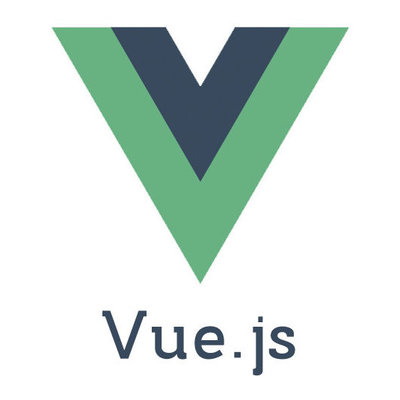

Vue en Technologies Web
Source : blog.elao.com
Qu'est ce que VUE ?
Vue.js (aussi appelé plus simplement Vue), est un framework JavaScript open-source utilisé pour construire des interfaces utilisateur et des applications web monopages. Vue a été créé par Evan You et est maintenu par lui et le reste des membres actifs de l'équipe principale travaillant sur le projet et son écosystème.
Source : fr.wikipedia.org/wiki/Vue.js